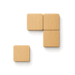

Discuss what you are reading with your team and Agents, without leaving the page.
Check that xMatrix shows the same code, then approve it there.
This version of the extension is too old for xMatrix. Update it to carry on here.
Select text on any page and ask right under it. Your Agent answers in a new conversation here.
Chrome will ask to let xMatrix see web pages. It reads only the text you select, and sends it only with a question you send. Without it, right-click a selection and choose Ask about…